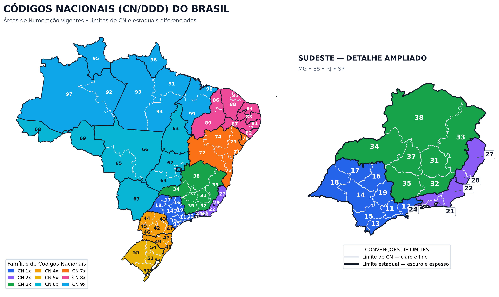
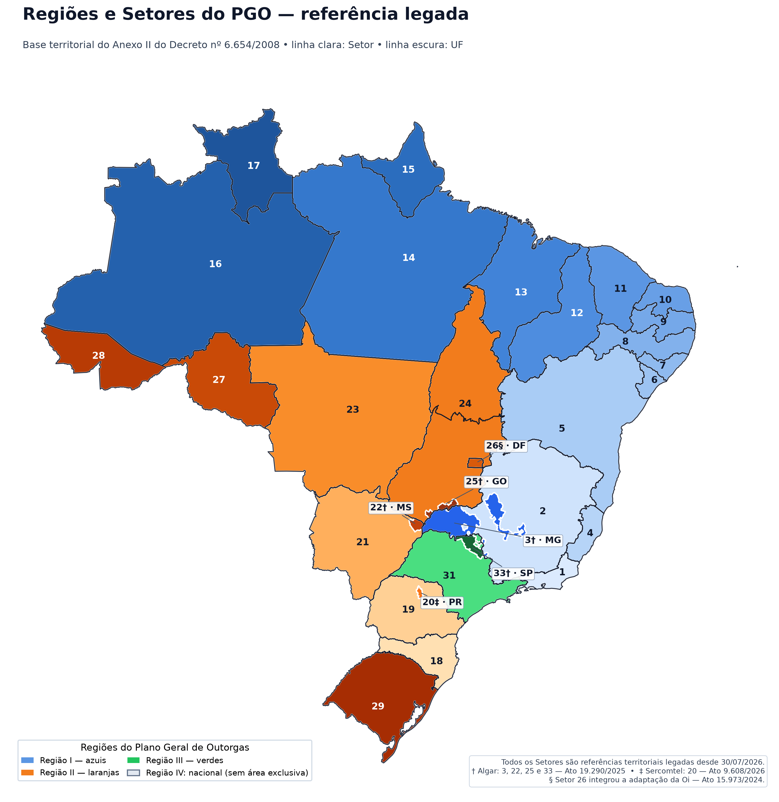

A organização geográfica da telefonia fixa brasileira mudou de forma relevante em 2026. Desde 21 de junho de 2026, a Área Local do Serviço Telefônico Fixo Comutado (STFC) passou a coincidir, em todo o país, com a respectiva Área de Numeração identificada pelo Código Nacional — o conhecido DDD.
Na prática, os municípios que utilizam o mesmo DDD agora pertencem à mesma Área Local do STFC. Com a conclusão do cronograma da Anatel, o país passou a ter 67 Áreas Locais, uma para cada Código Nacional geográfico.
A mudança simplifica o desenho regulatório, mas exige atenção de operadoras, provedores e integradores. Sistemas legados podem ainda depender de antigas Áreas Locais municipais, associações rígidas entre DDD e UF ou recortes históricos do Plano Geral de Outorgas (PGO). Esses critérios já não são suficientes para reconstruir a Área Local vigente.
Em uma frase: desde 21/06/2026, Área Local do STFC e Área de Numeração/CN passaram a ter os mesmos limites geográficos.

Figura 1 — Códigos Nacionais (CN/DDD) vigentes. Fonte dos códigos: PGCN/Anatel; base cartográfica: IBGE. Os limites estaduais e de CN foram diferenciados para facilitar a leitura.
Resumo: quatro conceitos que não devem ser confundidos
| Conceito | O que representa | Impacto prático |
|---|---|---|
| CN/DDD | Identificador de dois algarismos de uma Área de Numeração | Compõe o número nacional e orienta a marcação entre áreas distintas |
| Área Local do STFC | Área geográfica da modalidade Local do STFC | Desde 2026, coincide com a Área de Numeração/CN |
| Tratamento Local | Aplicação das regras e condições de comunicação local entre localidades de Áreas Locais distintas, nos casos aprovados pela Anatel | Não altera o DDD nem funde Áreas de Numeração; a marcação continua incluindo o CN |
| Região e Setor do PGO | Recortes territoriais ainda descritos no Plano Geral de Outorgas | Nenhum Setor corresponde hoje a uma concessão ativa de STFC, mas os recortes ainda podem aparecer em normas, documentos e bases legadas |
O que mudou nas Áreas Locais do STFC?
Até 2025, dois municípios com o mesmo DDD podiam pertencer a Áreas Locais distintas. Isso ocorria porque a Área Local podia corresponder a um município ou a um agrupamento específico de municípios e localidades.
O art. 3º do Anexo III da Resolução Anatel nº 768/2024 alterou essa lógica: a Área Local do STFC passou a ter os mesmos limites da Área de Numeração. O Acórdão Anatel nº 202/2025 estabeleceu uma implantação em nove etapas, concluída em 21 de junho de 2026 com os Códigos Nacionais de São Paulo.
O que mudou
- municípios de um mesmo CN passaram a integrar uma única Área Local do STFC;
- o total nacional foi reduzido para 67 Áreas Locais;
- chamadas fixas entre municípios do mesmo CN passaram a ser classificadas como locais;
- regras de roteamento, tarifação e cadastro baseadas em antigas Áreas Locais municipais precisam ser revisadas.
O que não mudou
- os dois algarismos do CN/DDD;
- os oito algarismos do número fixo;
- os nove algarismos do número móvel;
- a necessidade de usar o CN e a marcação aplicável quando a chamada ocorre entre Áreas de Numeração distintas;
- a necessidade operacional de preservar município, UF, CNL e outros identificadores relevantes para bilhetagem, interconexão, conciliação e tributação;
- os recortes territoriais descritos no PGO, embora já não representem concessões ativas.
Por que a mudança exige revisão operacional?
A equivalência entre Área Local e CN parece simples, mas pode atingir diferentes camadas da operação. O risco está menos no formato do número e mais nas regras antigas gravadas em sistemas, tabelas, rotas e processos internos.
1. Roteamento e classificação de chamadas
Regras que identificam uma chamada como local apenas com base em município, CNL ou agrupamentos antigos podem produzir classificação incorreta. A referência geográfica da Área Local vigente passou a ser a Área de Numeração/CN.
2. Bilhetagem e tarifação
As regras de rating precisam refletir o desenho atual sem perder a granularidade cadastral. Uma Área Local única pode atravessar limites estaduais, como ocorre no CN 61, que abrange o Distrito Federal e municípios de Goiás.
3. Interconexão, DETRAF e conciliação
A consolidação da Área Local não elimina dados de origem e destino. Município, UF, CNL e demais chaves operacionais continuam relevantes para conciliação, interconexão e aplicação de contratos.
4. Cadastros de numeração
Não é seguro deduzir UF ou antigo Setor do PGO apenas pelo DDD. Há Códigos Nacionais presentes em mais de uma UF e em mais de um recorte territorial do PGO.
5. Sistemas e integrações legadas
Softswitches, SBCs, plataformas de billing, portabilidade, antifraude, relatórios e integrações podem conter tabelas anteriores à mudança. A atualização deve ser verificada ponta a ponta, não apenas na camada de discagem.
Ponto de atenção: a mudança regulatória não alterou o número do assinante, mas pode alterar a forma como uma plataforma classifica, roteia ou tarifa determinadas chamadas.
Área Local e Tratamento Local não são a mesma coisa
Essa é uma das distinções mais importantes.
Área Local é a área geográfica de prestação do STFC na modalidade Local. Desde a conclusão da implantação em 2026, seus limites coincidem com os da Área de Numeração.
Tratamento Local é a aplicação das regras e condições de uma comunicação local entre localidades que pertencem a Áreas Locais — e, portanto, a CNs — distintas, nos casos relacionados pela Anatel. O conceito inclui aspectos de prestação e interconexão, não apenas tarifação.
Mesmo quando existe Tratamento Local:
- os CNs permanecem diferentes;
- as Áreas de Numeração não são fundidas;
- o CN continua fazendo parte da marcação;
- aplica-se o procedimento de longa distância previsto para chamadas entre Áreas de Numeração distintas.
Essa regra aparece no art. 20, parágrafo único, do Regulamento de Numeração aprovado pela Resolução Anatel nº 749/2022.
Como fica a marcação das chamadas?
De forma simplificada:
Dentro da mesma Área Local e do mesmo CN
número do assinanteO Regulamento de Numeração também admite o procedimento de longa distância como alternativa.
Entre Áreas de Numeração distintas
Quando há seleção de prestadora de longa distância:
0 + CSP + CN + número do assinantePara acessar uma prestadora previamente definida pelo usuário, o art. 23 da Resolução nº 749/2022 admite:
0 + CN + número do assinanteDo exterior para o Brasil
55 + CN + número do assinanteO sinal + usado em contatos e aplicativos representa o
código de acesso internacional adotado na origem; ele não é um dígito do
número do assinante.
O formato do número fixo mudou?
Não. Para números geográficos do STFC, a estrutura nacional continua combinando:
- Código Nacional (CN/DDD): dois algarismos;
- código de acesso do assinante fixo: oito algarismos, nas séries iniciadas de 2 a 6 na data deste artigo;
- código do país: 55, quando a chamada se origina no exterior.
O número nacional significativo é formado por
CN + código de acesso. Os números móveis continuam com nove
algarismos e séries próprias.
O PGO ainda importa?
Sim, mas com uma função diferente daquela exercida no antigo modelo de concessões.
O Plano Geral de Outorgas, aprovado pelo Decreto nº 6.654/2008, continua descrevendo quatro Regiões e 31 Setores territoriais: os Setores de 1 a 29, 31 e 33. Esses recortes ainda podem ser citados em regulamentação, documentos históricos, contratos e bases cadastrais.
Por outro lado, desde 30 de julho de 2026, nenhum Setor corresponde a uma concessão ativa de STFC. A última adaptação foi concluída com a assinatura do Termo de Autorização nº 9/2026/Anatel, referente à Sercomtel.
Também é importante separar dois efeitos regulatórios:
- a Resolução nº 768/2024 e o faseamento do Acórdão nº 202/2025 definiram o desenho atual das Áreas Locais por CN;
- os atos de adaptação das antigas concessionárias encerraram as concessões e permitiram a prestação do STFC em regime privado.
Portanto, o Setor do PGO não deve ser usado como substituto do CN nem como fronteira da Área Local vigente.

Figura 2 — Regiões e Setores ainda descritos no Anexo II do PGO. As linhas claras delimitam Setores e as linhas escuras delimitam UFs. O mapa não representa concessões vigentes.
Por que um DDD pode aparecer em mais de um Setor?
Porque CN e Setor foram criados para finalidades diferentes. O CN identifica uma Área de Numeração; o Setor é um recorte territorial do PGO.
Alguns exemplos:
- o CN 35 aparece nos Setores 2 e 3, em Minas Gerais;
- o CN 43 aparece nos Setores 19 e 20, no Paraná;
- o CN 67 aparece nos Setores 21 e 22, em Mato Grosso do Sul;
- os CNs 16 e 17 aparecem nos Setores 31 e 33, em São Paulo;
- o CN 61 abrange o Setor 26, no Distrito Federal, e parte do Setor 24, em Goiás.
Por isso, quando a associação histórica ou cadastral com Setor for necessária, o cruzamento deve ser feito por município/localidade, pela redação vigente do PGO e pela base atual do Plano Geral de Códigos Nacionais (PGCN).
Exemplo prático: uma Área Local em duas UFs
O CN 61 forma uma única Área Local do STFC, mas abrange localidades do Distrito Federal e de Goiás.
Isso significa que a classificação local é determinada pelo CN. Entretanto, os sistemas ainda precisam preservar UF, município e CNL para processos como bilhetagem, interconexão, DETRAF, conciliação e tributação.
A mudança de Área Local não apaga a origem geográfica da chamada nem transforma DF e GO em uma única unidade fiscal. Ela apenas define que as localidades do mesmo CN integram a mesma Área Local do STFC.
Checklist para operadoras, provedores e integradores
Ao revisar a operação após a mudança, verifique:
Perguntas frequentes
O DDD mudou em 2026?
Não. A mudança reuniu os municípios do mesmo CN em uma única Área Local do STFC, sem alterar os dois algarismos do DDD.
O número do assinante fixo mudou?
Não. O número fixo continua com oito algarismos. A alteração atingiu o limite geográfico da Área Local.
Toda chamada dentro do mesmo DDD passou a ser local?
No STFC, os municípios do mesmo CN passaram a integrar a mesma Área Local. Portanto, a comunicação fixa dentro desse CN é classificada como local.
Tratamento Local elimina a marcação com DDD?
Não. Entre Áreas de Numeração distintas, o CN continua obrigatório, inclusive quando existe Tratamento Local.
O Setor do PGO define a Área Local atual?
Não. Os Setores continuam descritos no PGO e podem aparecer em outras referências regulatórias ou cadastrais, mas a Área Local do STFC passou a coincidir com o CN.
É possível descobrir o Setor apenas pelo DDD?
Nem sempre. Um mesmo CN pode atravessar mais de um Setor, e alguns CNs abrangem mais de uma UF. O cruzamento deve considerar município ou localidade.
Como a ZICTEC pode apoiar
Sua operação ainda depende de Áreas Locais municipais ou de associações antigas entre DDD, CNL e Setor?
A ZICTEC pode apoiar a revisão de numeração, roteamento, bilhetagem, cadastros técnicos, interconexão e controles operacionais à luz da configuração vigente do STFC.
Fale com um especialista: WhatsApp +55 47 3230-0435
Site: www.zictec.com.br
Agendamento: www.calendly.com/zictec/reuniao
Referências oficiais
- Resolução Anatel nº 749/2022 — Regulamento de Numeração
- Resolução Anatel nº 768/2024 — Regulamento de Tarifação do STFC
- Resolução Anatel nº 777/2025 — Regulamento Geral dos Serviços de Telecomunicações
- Resolução Anatel nº 779/2025 — Glossário aplicável ao Setor de Telecomunicações
- Acórdão Anatel nº 202/2025 — faseamento das Áreas Locais e vigências correlatas
- Áreas Locais da Telefonia Fixa — Anatel
- Decreto nº 6.654/2008 — Plano Geral de Outorgas
- Anatel — adaptação das concessões do STFC
- Termo de Autorização nº 9/2026/Anatel — DOU
- Dados abertos do PGCN — Anatel
Nota de atualização: este artigo usa normas e bases oficiais consultadas em 21/09/2026. O PGCN, a lista de Tratamento Local e os atos da Anatel podem ser atualizados. Os dispositivos da Resolução nº 777/2025 com vigência programada para 2027 devem ser reconfirmados antes da publicação ou de uso operacional posterior.
Aviso: conteúdo informativo. A aplicação em rede, sistemas, contratos, tributação ou interconexão deve considerar as características da operação e as bases oficiais vigentes.